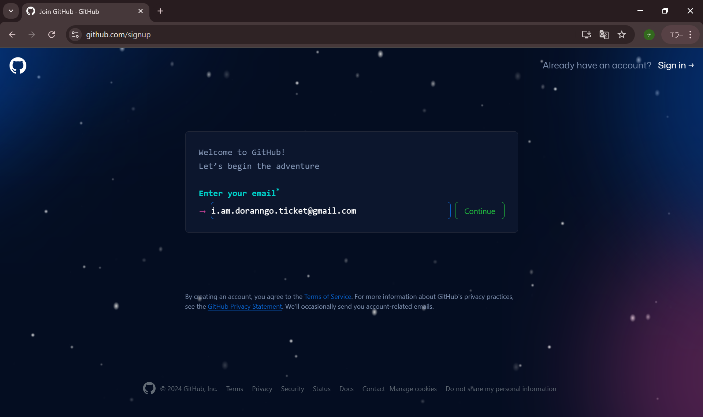
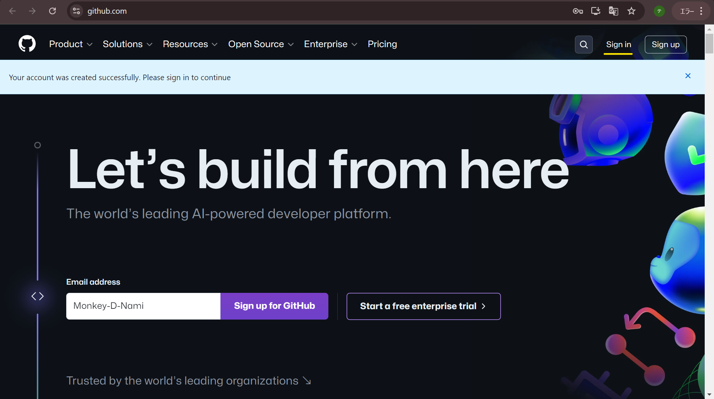

ぎっと はぶ の あかうんと を つくる
ながれ ＊ためしたひ 2024/7/29
-
作ったばかりのgoogleアカウントでgoogleトップページを開く
-
「github」と検索する。
-
検索結果の「https://github.co.jp」のページをクリック
-
新規アカウント作成するので「サインアップ」をクリック
-
githubへようこそ！ さあ 冒険に出発だ！！！

-
ブラウザの右上のアカウントアイコンをクリックして
作成したてのgmailアドレスを確認
-
Eメール入力欄に入力
↓
「Continue」をクリック

-
パスワード入力欄が出現
-
つくったばかりのgoogleアカウントで
パスワードマネージャを有効化する
＊パスワード入力欄で右クリックして
「パスワードをこのアカウントで管理する」的な文言を選んで
つくったばかりのgoogleアカウントのログインパスワード入力すると
パスワードマネージャが有効化される。
-
パスワード入力欄で右クリックして
「パスワードを自動生成」をクリック
-
自動生成されたパスワードがパスワード欄に入力される。
パスワードをパスワードマネージャに保存するか聞かれたら、保存を選ぶ
↓
「Continue」をクリック
-
なまえ入力欄が出現
＊名前は本名ではなくてよいけど、一度決めたら変更できない。
自分のアカウントでgithubを通して意図的に情報を公開したり、
他のgithubユーザーと交流するとき、
この名前が伝わるので、
知らない人に見られてもよい名前にすること。
-
世界でたった一つの名前でないと
「この名前は使用できません」的なメッセージが表示される。
「uchiha-madara」はもう存在しているから、使えない。
代わりに使用できる名前の提案がされる。
「uchiha-madara-del, uchiha-madara-ops, or uchiha-madara147 are available.」
＝「uchiha-madara-del, uchiha-madara-ops,あるいは uchiha-madara147 は使えますよ.」
-
Monkey-D-Zoroは既に存在するアカウントなので使えない

-
Monkey-D-Namiはまだいない！
私はこの名前でいきます！
「Continue」をクリック
-
「 製品（githubなど）の更新情報や通知をメールで受け取りますか？」的な
メルマガ購読するかのチェックボックスが出現
チェックするかはお任せ。
-
あなた（ブラウザでgithubを操作している主体）がプログラムではなく、
人間であることを証明をして、と言われます。
「検証する」をクリック
-
パズルを解きましょう。
-
パズルに正解すると、
登録したgmailアドレス（この手順通りなら作ったばかりのgoogleアカウント）に、
確認コードが書かれたメールが送られます。
メールを確認します。
＊パスワードマネージャを使ってパスワードを生成していたら
右上に「パスワードを保存しました」と表示されます。
-
gmail開くと
「アカウントに蓄積される情報を元にして色々便利にしてあげようか」的な文言が出現。
不要なら下の〇をクリック。
-
わたしはいらない
「Next」をクリック
-
「こんなに便利な機能があるのに、本当にいらないの？」って聞いてくる。
いらないから「Turn off Features」（機能をOFFにする）をクリック
-
gmailに入れた！
inbox（受信ボックス）をクリック
-
8桁コードを確認！

-
8桁コードを入力！
-
「Your account was created successfully. Please sign in to continue.」
＝「あなたのアカウントの作成に成功しました。続けるにはサインインしてください」
とあるので、アカウント作成は成功。
でかでかと「Let's build from here」＝「ここから始めよう」と書いてありますが、
最近できた、AIとgithubを連携させたサービスの無償トライアルを
使わせようとする広告です。
今は無視でよし。
↓
「サインイン」が灰色の帯で隠れているので、「×」をクリックして閉じます。
-
「Sign in」をクリック

-
サインイン（アカウント作成済みの人がログインこと）用の入力欄が出現！
入力します。
＊googleパスワードマネージャで生成したパスワードを登録し、
そのまま問題なく「人間の証明」パズルに正解していれば、
パスワードマネージャにユーザー名とパスワードが保存されているので、
この画面が表示されるとほぼ同時に、
ユーザー名とパスワードは自動で埋まります。
↓
「Sign in」をクリック
-
ログイン済み画面